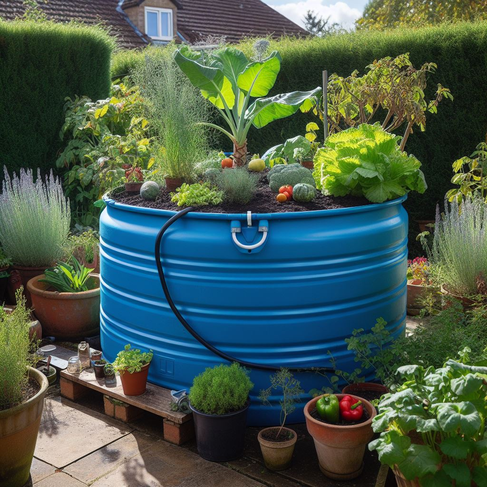
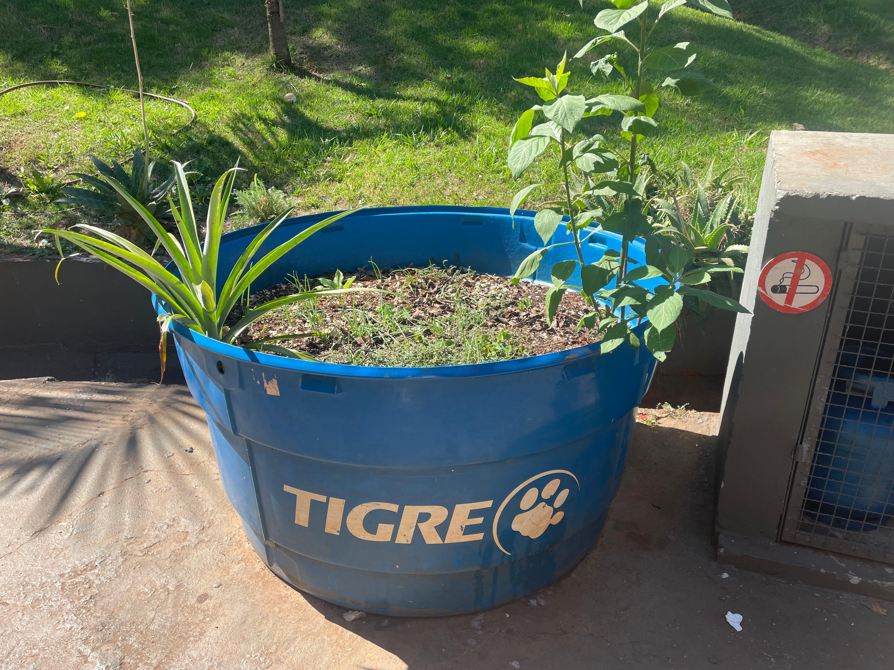
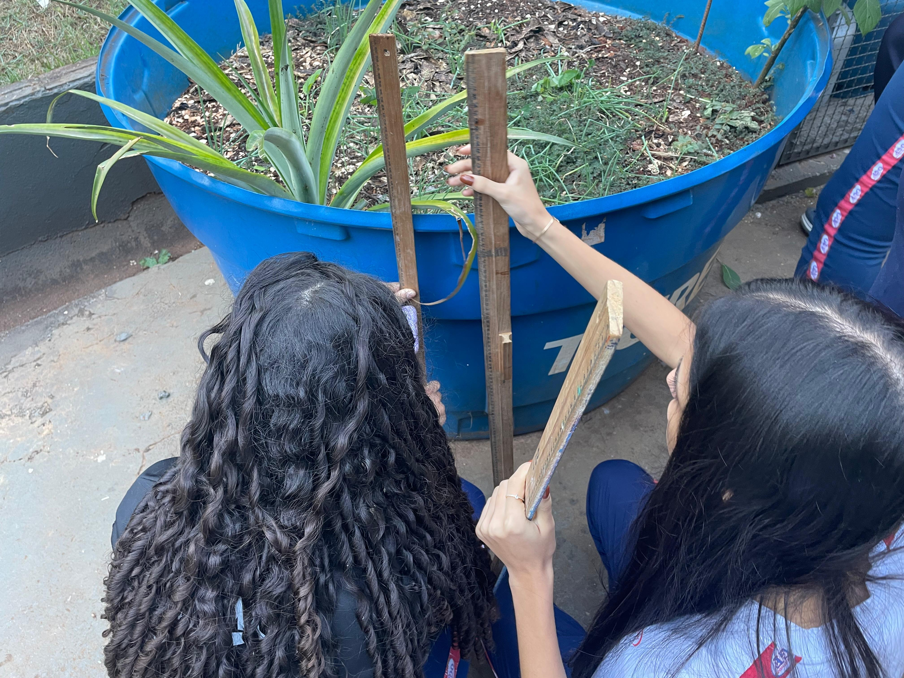
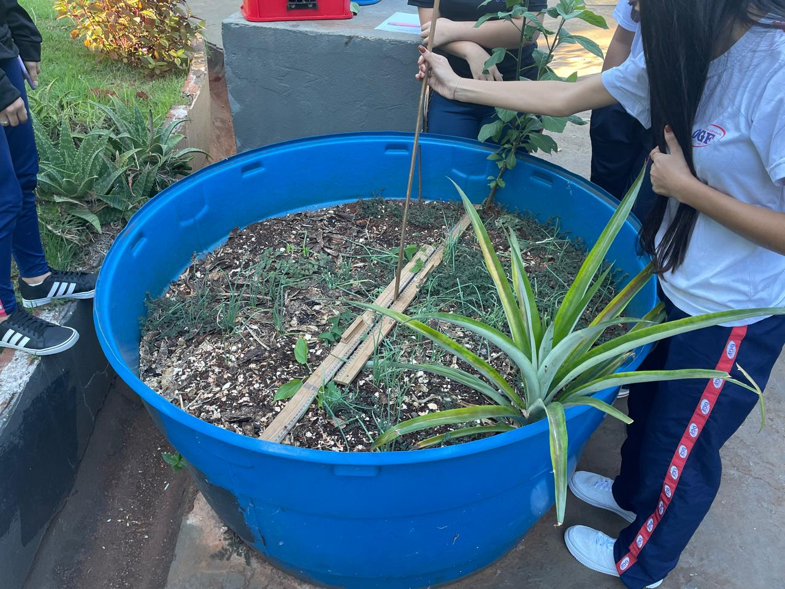

Reutilizando: uma ideia para o uso de caixas d’água na agricultura urbana

Esta atividade propõe a investigação de possibilidades de reutilização de uma caixa d’água presente no espaço escolar, com foco na agricultura urbana. A proposta mobiliza conhecimentos matemáticos e de diferentes áreas para o planejamento do plantio, a organização do espaço, a escolha do que será cultivado e a discussão de alternativas para manutenção da plantação.
Problema investigativo
No pátio da escola há uma caixa d’água que não está sendo utilizada. Considerando a prática de reutilização de recipientes para plantio, de que maneira ela poderia ser aproveitada? O que poderia ser plantado nela? Como organizar o plantio e quais condições seriam necessárias para sua manutenção?
Informações da atividade
Ensino Médio
Ciência, Tecnologia, Engenharia, Arte e Matemática
área, perímetro, divisão de espaço, estimativas, organização espacial e interpretação de medidas
caixa d’água, materiais para plantio, instrumentos de medida, registros escritos e recursos digitais
Materiais para download
Como a atividade foi desenvolvida
A atividade foi desenvolvida em contexto real de sala de aula e organizada em etapas. Inicialmente, os estudantes foram convidados a refletir sobre a possibilidade de reutilização da caixa d’água. Em seguida, investigaram dimensões, possibilidades de divisão do espaço, tipos de plantio e condições necessárias para cultivo e manutenção. Posteriormente, a proposta envolveu discussões sobre irrigação e aprimoramento das ideias elaboradas pelos grupos.
Registros da aplicação



Sugestões ao professor
Recomenda-se que a atividade seja desenvolvida de forma colaborativa, incentivando os estudantes a discutir possibilidades, construir registros e justificar suas escolhas. O professor pode propor momentos de socialização das ideias, retomada de cálculos, comparação entre propostas e reflexão sobre sustentabilidade, uso do espaço escolar e viabilidade das soluções elaboradas.